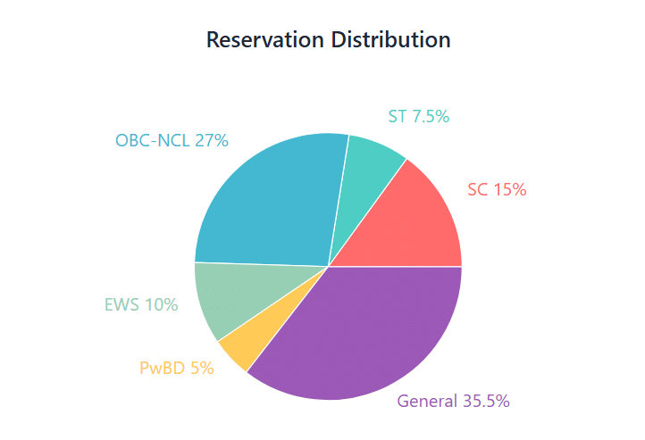

- We’re on your favourite socials!


Banaras Hindu University, established in 1916, is a central university ranked 6th (NIRF 2025). It offers 612+ courses across UG, PG, and PhD levels with fees ranging from INR 6,000 to INR 3.6 lakh. BHU admission to most UG and PG courses is entrance-based through CUET, NEET, and CAT. The campus is spread over 1300 acres, BHU has 17.19% placement rate, and median packages up to INR 9 LPA as per the NIRF report 2025.

BHU Latest Updates
JEECUP 2026 Round 4 Seat Allotment has been released. Candidates can check their allotment status through the official counselling portal at jeecup.admissions.nic.in. The last date to confirm the allotted seat by selecting the Freeze or Float option, paying the counselling and security fee, completing document verification, and reporting to the allotted institute is August 3, 2026.
Re NEET 2026 OMR sheets and recorded responses have been released. Candidates can check and download their OMR sheets through the official portal at neet.nta.nic.in. The objection window is now open, and candidates can submit challenges against the recorded responses until July 15, 2026.
BHU PG Spot Round Admission 2026 registrations are now open. The last date to submit the application form is July 14, 2026. Candidates with a valid CUET PG 2026 score can apply online through the official admission portal at admission.bhu.ac.in. The first seat allotment will be announced on July 16, 2026.
Want to know more about BHU?
About Banaras Hindu University (BHU)
Banaras Hindu University Varanasi, also known as BHU, is a public central university that was established in the year 1916. Located in Varanasi, Uttar Pradesh, the university is recognised by the University Grants Commission (UGC). It is also accredited with an NAAC A grade. As per NIRF 2025, the university has been ranked 6th in the University category and 10th in the Overall category. Some of the major highlights for BHU are listed below:
- BHU Courses: Banaras Hindu University offers over 600 courses like BA, BSc, BTech, MBBS, and MBA.
- UG & PG Admissions: BHU course admission is mainly based on CUET UG and CUET PG scores.
- Professional Courses: For MBA, students need CAT and for MBBS or Nursing, NEET is required.
- PhD Admission: Most PhD admissions are based on UGC NET, CSIR NET, or JRF scores, replacing the separate BHU RET written exam for many disciplines
- NIRF 2025 Ranking: 6th in the University category and 10th in the Overall category.
- Verified Placement Rate: According to NIRF 2025, the placement rate was 17.19% for the University.
- Median Salary Packages: Recent reports highlight median packages of INR 8.00 LPA for 3-year UG programs and INR 9.00 LPA for 4-year professional UG degrees.
- Top Industry Recruiters: Major recruiters include global firms like IBM, Infosys, and ICICI Bank in the annual BHU recruitment drives.
Most Commonly Question Asked
TOP PICKS FOR YOU
Student preferred colleges
Hand-picked colleges most viewed by students considering Banaras Hindu University
BHU specialties
 Rankings : Top-Tier National Standing - Ranked #5 in the University category and #11 Overall in NIRF 2024 - Ranked #4 nationally in the Agriculture and Allied Sectors category
Rankings : Top-Tier National Standing - Ranked #5 in the University category and #11 Overall in NIRF 2024 - Ranked #4 nationally in the Agriculture and Allied Sectors category Region : Strategic Cultural & Educational Hub - Located in Varanasi, the cultural and spiritual capital of India, providing a unique blend of heritage and modern academia - Serves as the primary educational gateway for the North and East Indian regions with excellent rail and air connectivity
Region : Strategic Cultural & Educational Hub - Located in Varanasi, the cultural and spiritual capital of India, providing a unique blend of heritage and modern academia - Serves as the primary educational gateway for the North and East Indian regions with excellent rail and air connectivity Fees : Highly Affordable Central Education - Rs 0.1 - 2.5 L (Total) - One of the most subsidized fee structures among top-tier Indian universities
Fees : Highly Affordable Central Education - Rs 0.1 - 2.5 L (Total) - One of the most subsidized fee structures among top-tier Indian universities ROI : Best Value for Investment - Exceptional ROI due to minimal tuition fees paired with high-value placements in Engineering, Management, and Medicine - Extensive government scholarships and subsidized residential facilities further enhance value
ROI : Best Value for Investment - Exceptional ROI due to minimal tuition fees paired with high-value placements in Engineering, Management, and Medicine - Extensive government scholarships and subsidized residential facilities further enhance value Placements : Multi-Sectoral Recruitment - Strong focus on IT, Finance, and Core Engineering sectors with 210+ placement drives conducted annually - Dedicated Training and Placement cells for specialized institutes like IIT-BHU, IMS, and FMS
Placements : Multi-Sectoral Recruitment - Strong focus on IT, Finance, and Core Engineering sectors with 210+ placement drives conducted annually - Dedicated Training and Placement cells for specialized institutes like IIT-BHU, IMS, and FMS
Table of Contents
BHU Courses & Fees 2026
BHU courses list includes 612+ programs at the diploma, UG and PG levels in management, medical, science, commerce, pharmacy, law, and other streams. Some of the popular BHU courses are BA, BSc, MBBS, BTech, etc., at the UG level and MBA, MTech, MSc, etc., at the PG level. These Banaras Hindu University courses are offered in various specialisations such as physics, mathematics, history, agriculture, literature, etc. The BHU fee ranges from INR 6,000 to INR 3,61,500, depending on the type and level of the course.
BHU Fee Structure 2025
BHU's fee structure is distributed into 2 types: one for paid seats, and another for regular seats. The fees for the paid seats are generally higher than the regular ones; a student with a lower cutoff in the entrance exam can go for the paid seats. Fees for BHU 2026 are INR 6,000 to INR 80,000 for the regular seats and INR 21,200 to INR 3,61,500 for the paid seats. The list of BHU courses and their total fees can be checked from the table below:
| Course | Duration | Regular Seat Fees | Paid Seat Fees |
| BA (Hons) | 4 years | INR 9,200 | INR 21,200 – INR 57,200 |
| BSc (Hons) | 4 years | INR 16,000 | INR 1,92,000 |
| BCom (Hons) | 4 years | INR 9,200 | INR 1,29,200 |
| BTech | 4 years | - | INR 3,20,000 |
| MBBS | 5.5 years | - | INR 1,49,000 |
| MA | 2 years | INR 6,000 | INR 26,000 |
| MSc | 2 years | INR 8,000 | INR 1,08,000 |
| MBA | 2 years | - | INR 2,20,000 |
| MCA | 2 years | INR 8,000 | INR 2,68,000 |
| MD/MS (Medical) | 3 years | - | INR 45,000 – INR 1,08,000 |
| PhD | 3-5 years | - | INR 2,410 – INR 6,310 per year |
BHU Admission 2026
BHU admission 2026 for diploma, UG and PG courses has started. A candidate can take BHU course admission through the entrance exam, like the CUET exam (Common University Entrance Test), NEET (National Eligibility cum Entrance Test), followed by the Counselling process conducted by the BHU or MCC (Medical Counselling Committee), depending on the course chosen.
The University of Varanasi accepts scores of national entrance exams like CAT for MBA, NEET for MBBS, NTA CUET UG for undergraduate and NTA CUET PG for postgraduate courses. These were the primary entrance exams for Banaras Hindu University admission. The university accepts 10th/ 12th scores for diploma admission in BHU.
Admission for the PhD in BHU requires UG-NET, CSIR NET (including JRF), or direct admission criteria, followed by a university-level interview. BHU does not conduct a separate written Research Entrance Test (RET) for most disciplines anymore.
BHU Eligibility Criteria 2026
The table shows the minimum eligibility criteria for the BHU selection process 2026:
| Degree | Eligibility Criteria | Selection Criteria |
|---|---|---|
| MBBS | Class 12 with PCB + English (Min. 50% in PCB) | NEET UG + Medical Counselling Committee (MCC) |
| BSc | Candidates must pass 10+2 with PCM and 50% aggregate + CUET UG | CUET UG + BHU CAP Counselling |
| BTech | Class 12 in any stream (Min. 50% for General) | CUET UG + BHU CAP Counselling |
| BSc Nursing | Class 12 with PCB (Min. 45% for General) | NEET UG / CUET UG + Medical Counselling Committee (MCC) / BHU IMS |
| BEd | Candidates must pass 10+2 in any stream with 50% aggregate | CUET UG + BHU CAP Counselling |
| MA | Any bachelor's degree (Min. 50% for General) | CUET PG + BHU CAP Counselling |
| MCA | BCA / BSc CS / BE / BTech or degree with Maths (Min. 50%, 60% preferred) | CUET PG + BHU CAP Counselling |
| MBA / MBA-IB | Any bachelor's degree (Min. 50% for General) | CAT Score + Group Discussion (GD) & Personal Interview (PI) + BHU CAP Counselling |
| MSc | BSc in relevant subject (Min. 50–55% for General) | CUET PG + BHU CAP Counselling |
| LLM | LLB (Min. 55% for General) | CUET PG + BHU CAP Counselling |
BHU Admission Reservation Policy:
- SC: 15%,
- ST: 7.5%,
- OBC-NCL: 27%,
- EWS: 10%,
- PwBD: 5%, as per Government of India norms.

BHU Entrance Exam For Admission 2026
BHU accepts various entrance exams for admission to its UG and PG courses. The list of entrance exams for BHU admission is as follows:
| Entrance Exam | BHU Courses |
|---|---|
| CUET-UG 2026 | BA (Hons), BSc (Hons), BCom (Hons), BTech (Food/Dairy), BPharm, LLB, BA LLB, BEd, BFA, BPA, BMus, BVoc, and BSc Agriculture |
| NEET-UG 2026 | BBS, BDS, BAMS, BNYS, BPT, BOT, and BSc Nursing |
| CUET-PG 2026 | MA, MSc, MCom, MCA, LLM, MEd, MPEd, MFA, MPA, MMus, MPH, MLib, and PG Diplomas |
| CAT 2025/2026 | MBA and MBA-IB |
| NEET-PG 2026 | MD and MS |
| NEET-MDS 2026 | MDS |
| UGC-NET / CSIR-NET | PhD (BHU-RET is now limited to specific categories/seats). |
BHU Admission Process 2026
BHU admission process 2026 starts with appearing in the relevant entrance exam and sitting in the counselling process to get a seat. BHU admission process differs for the different courses. Below is the complete 3-way BHU admission process for 2026:
| Course | Entrance Exam & Counselling Body | Admission Steps |
|---|---|---|
| Regular UG (BA, BSc, BCom, BFA, LLB, BVoc, BPA) |
|
|
| Regular PG (MA, MSc, MCom, MCA, LLM, MEd) |
|
|
| Medical UG & PG (MBBS, BDS, BSc Nursing, MD, MS) |
|
|
BHU Admission Dates 2026
BHU conducts admissions around April-May every year for the UG and PG courses. The dates of BHU admission also depend on the respective entrance exams. The important dates related to BHU admission have been listed below:
| Event | Dates |
|---|---|
| CUET PG Exams 2026 | March 6 – 27, 2026 (Confirmed) |
| CUET PG Answer Key & Results 2026 | Mid to Late April 2026 (Tentative) |
| BHU Diploma Application Deadline 2026 | April 30, 2026 (Confirmed) |
| NEET UG Exam 2026 | May 3, 2026 (Confirmed) |
| CUET UG Exams | May 11 – 31, 2026 (Confirmed) |
| BHU PG Admission Portal Opens 2026 | May 2026 (Tentative) |
| NEET UG Answer Key & Results 2026 | Late May to Mid-June 2026 (Tentative) |
| BHU Diploma Merit List & Counselling 2026 | June – July 2026 (Confirmed) |
| CUET UG Answer Key & Results 2026 | Mid-June to Late July 2026 (Tentative) |
| NEET UG Counselling Begins 2026 | July 2026 onwards (Tentative) |
| BHU UG Admission Portal Opens 2026 | August 2026 (Tentative) |
| NEET PG Exam 2026 | August 30, 2026 (Confirmed) |
| NEET PG Internship Cut-off 2026 | September 30, 2026 (Confirmed) |
| NEET PG Results & Counselling 2026 | Sept/Oct – Late 2026 (Tentative) |
| PhD Notification & Registration 2026 | Nov/Dec 2026 (Tentative) |
Most Commonly Question Asked
BHU Dates & Events 2026
Upcoming Events
| Degree/Course Name | Title | Date |
| BA | Banaras Hindu University | 2026-09-09 to 2026-09-11 (Tentative) |
Expired Events
| Degree/Course Name | Title | Date |
| BA | Banaras Hindu University | 2026-08-04 to 2026-08-05 (Tentative) |
| BA | Banaras Hindu University | 2026-07-16 to 2026-08-02 (Tentative) |
| BA | Banaras Hindu University | 2026-05-08 to 2026-06-01 (Tentative) |
| BA | Banaras Hindu University | 2026-03-26 to 2026-03-28 (Tentative) |
| BA | Banaras Hindu University | 2026-03-01 to 2026-03-24 (Tentative) |
| MBA | Exam Date of CMAT | 2026-01-25 (Confirmed) |
BHU Highlights
BHU Placements 2025
BHU placement report 2025 has not been published yet, but according to the NIRF report 2025, 17.19% placement rate was achieved, with a total of 1,967 students placed across all UG and PG courses in the year of 2024. The average median package was INR 8.5 LPA. More than 100 companies visited the campus for placements. Some of the top recruiters for BHU placements are IBM, Infosys, Genpact, Cognizant, Mahindra Finance, IDBI Bank, Ujjivan Small Finance Bank, ICICI Bank, etc. Some of the major Banaras Hindu University placement statistics are given below:
| Particular | Detail |
|---|---|
| BHU Overall Placement Rate | 17.19% |
| BHU Average Median Package | INR 8.5 LPA |
| Total Students Placed in BHU | 1,967 |
| Total Students Selected for Higher Studies | 8502 |
BHU Top Recruiters 2026
BHU Varanasi invites numerous top-reputing companies and recruiters to the campus. Some of the top BHU recruiters who visit the campus every year are as follows:
BHU Top Recruiters 2026 | ||
|---|---|---|
| Infosys | Genpact | Cognizant |
| ICICI Bank | Adani Wilmar | Volvo Eicher |
| Visa Steel | Bajaj Asset Management | Escorts Kubota |
| DHL | SBI Life Insurance | L&T Financial Services |
| Graviton Research Capital | Rakuten | Microsoft |
| S&P Global | Emami Agrotech | IBM |
| Capgemini | TCS | SBI Life |
BHU Placement Stats 2023
Highest package and Average package (2023)
Top Recruiters at BHU

BHU Cut Off 2025
BHU CUET cutoff 2025 has been released at bhu.ac.in. The cutoff is based on the CUET entrance exam for UG and PG admission. BHU UG cutoff 2025 is 257 - 607 marks in CUET UG, and BHU PG cutoff 2025 is 59 and 790 marks in CUET PG. BHU cutoff for CUET, the Round 1 opening and Round 6 closing ranks for UG courses under the general category are given in the below table:
Course | Round 1 (Opening) | Round 6 (Closing) |
|---|---|---|
BSc (Hons) Agriculture | 629 | 607 |
BSc (Hons) Zoology | 612 | 555 |
BSc (Hons) Botany | 578 | 521 |
BCom (Hons) Finance | 546 | 525 |
BCom (Hons) | 539 | 524 |
BSc (Hons) Computer Science | 504 | 538 |
BTech Food Technology | 463 | 410 |
BTech Dairy Technology | 448 | 378 |
BSc (Hons) Chemistry | 438 | 373 |
BA (Hons) Mathematics | 416 | 393 |
BSc (Hons) Physics | 413 | 384 |
BA (Hons) Economics | 328 | 317 |
BA (Hons) Political Science | 323 | 328 |
BA (Hons) History | 317 | 314 |
BA (Hons) Psychology | 314 | 306 |
BA (Hons) Sociology | 305 | 295 |
MBBS
MBBS in General Medicine (Medical)BDS
BDS in Dental Surgery (Dental)BSc
BSc in Zoology (Science)BHU Reviews and Rating
Why to choose BHU?

4.4
(100 Verified Reviews)
Share your college experience
Earn unlimited cash rewards  Earn up to ₹10 for every approved college review. Refer your friends to write reviews and earn ₹10 for each of their approved reviews too.
Earn up to ₹10 for every approved college review. Refer your friends to write reviews and earn ₹10 for each of their approved reviews too.

Student Feedback and Rating on BHU
Enrollment : 2025 | Oct 10, 2025
Overall Rating of the University
Overall With its focus on academic quality, technical exposure, and overall student development, this institute has made a name for itself. There are several different undergraduate and graduate courses available .at the college.
Enrollment : 2025 | Oct 10, 2025
Overall Rating of the University
Overall With its focus on academic quality, technical exposure, and overall student development, this institute has made a name for itself. There are several different undergraduate and graduate courses available at the college.
Enrollment : 2018 | Sep 08, 2025
A legacy of excellence
Overall The university has quickly emerged as a promising institution in higher education. Known for its modern infrastructure and industry-aligned courses, the university offers a diverse range of programs
Enrollment : 2021 | Jul 04, 2025
Overview & Reputation
Overall Founded in 1916 by Pandit Madan Mohan Malaviya, BHU is one of India’s oldest and largest residential central universities tripadvisor.in +4 en.wikipedia.org +4 timesofindia.indiatimes.com +4 . Nationally, BHU was ranked 5th among Indian universities overall in NIRF 2024, with strong showings in research (16th), medical (7th), law (25th), management (48th) and engineering via its IIT‑BHU arm, which placed 10th in NIRF Engineering 2024
Enrollment : 2020 | Jul 04, 2025
Nice and good teaching
Overall Banaras Hindu University, founded by Pandit Madan Mohan Malaviya in 1916, is a central university and holds Institute of National Importance status. It offers a wide range of undergraduate and postgraduate courses, and the Bachelor of Arts (B.A.) program is one of its most popular streams.
Enrollment : 2023 | Jul 03, 2025
Nice and good teaching
Overall The B.A. program at BHU is perfect for students serious about academics, civil services, or research. It offers a peaceful environment, intellectual culture, and excellent resources at an extremely affordable cost. However, students looking for job placements
Enrollment : 2022 | Jul 03, 2025
Nice and perfect teaching
Overall Bharatiya Hindu University is a respectable institution for pursuing a B.A. degree, especially for students interested in humanities and social sciences. It provides a strong academic foundation, good faculty support, and opportunities for personal growth. With some improvements in infrastructure and career support, it has the potential to become one of the top choices for liberal arts education.
Enrollment : 2016 | Jun 28, 2025
Excellent it's is good
Overall I have completed my post graduation in commerce. I have crack entrance exam of BHU in 2016 . It's my great achievement in my life . That is my dream .
Enrollment : 2024 | Feb 01, 2025
Overall this place is good and affordable
Overall The university is very good for people who do not want to spend much money. Management is loose and not always on time but over all the environment is good and one who is preparing for Government exams can get many opportunities.
Enrollment : 2021 | Jan 31, 2025
Best place for learning in India with beautiful environment and cultural inclination
Overall Banaras Hidnu University, one of India's premiere education institutions, offers an outstanding Bachelor of Science in Mathematics program that stands out for its academic excellence and vibrant campus life.
BHU FAQs
Which entrance exams are accepted by BHU?
What are the MBA placement statistics 2024 at BHU?
Which facilities are offered at BHU campus?
Are there any scholarships available at BHU?
What is the BHU cutoff for admission?
What is the ranking of BHU Varanasi?
What is the BHU fee structure?
What are the eligibility criteria for admission at BHU?
How can I apply for admission to BHU?
Which courses are offered by BHU?
BHU Ranking 2025
BHU ranking 2025 has been published by various national and international ranking bodies. As per the NIRF ranking, BHU has been placed at the 6th rank in the University category and 10th in the overall category. For the international ranking, BHU stands at 203rd position in the science category by the QS World University Rankings 2025. Candidates can check the category-wise Banaras Hindu University NIRF ranking 2025 and other BHU international rankings from the table below:
| Ranking Body | Category | Rank |
|---|---|---|
| NIRF 2025 | University | 6 |
| NIRF 2025 | Overall | 10 |
| NIRF 2025 | Medical | 6 |
| NIRF 2025 | Science | 10 |
| NIRF 2025 | Dental | 15 |
| NIRF 2025 | Research Institutions | 16 |
| NIRF 2025 | Management | 60 |
| QS World University Rankings 2025 | Overall (World) | 1001–1200 |
| QS World University Rankings 2025 | Science | 203 |
| CWUR 2025 | National Rank (India) | 14 |
| CWUR 2025 | World Rank | 874 |
| Times Higher Education (THE) 2026 | World University (Overall) | 501–600 |
| Times Higher Education (THE) 2026 | Life Sciences | 201–250 |
| Times Higher Education (THE) 2026 | Medical and Health | 301–400 |
Ranking Publisher NIRF
- Overall#10
- University#6
- Law#25
- Dental#15
- Medical#6
- Management#60
- Agriculture#4
- Research#16
BHU Overall NIRF Ranking 2026
- OVERALLCombined scores base on institute performance.68.71GOOD
- TLRStrong emphasis on quality education and adequate resources.73.59GOOD
- RPActive engagement in research, high-quality publications, and strong professional collaborations.51.01GOOD
- GOGood placement and higher study opportunities for students, high median salary, and admissions into top universities.94.94Great
- OIFocus on diversity, inclusivity, and facilities for disadvantaged and physically challenged students.61.57GOOD
- PRPositive perception among employers, research investors, and academic peers.50.25GOOD
BHU Exams 2026
BHU conducts various examinations throughout the year, which generally fall into two main categories: Entrance Examinations (for new admissions) and Academic Semester Exams (for currently enrolled students). Below is an overview of how exams work at BHU:
BHU Entrance Exam 2026 (For Admissions)
To get into BHU, students must clear standardized national-level entrance exams. The university has now shifted toward the CUET entrance exam, away from conducting its own independent entrance tests (formerly known as BHU UET and BHU PET). BHU online registration CUET UG 2026 and BHU online registration CUET PG 2026 is done through the BHU CUET samarth.edu.in.
- Undergraduate Admissions (CUET UG): Conducted by the National Testing Agency (NTA). For the 2026 cycle, exams are typically held in May. This exam determines entry for courses like BA, BSc, BCom, BALLB, and BTech (Food/Dairy).
- Postgraduate Admissions (CUET PG): Also conducted by the NTA. The 2026 exams were held in March. This applies to MA, MSc, MCom, LLM, and other master's programs.
- PhD Admissions (BHU RET): BHU conducts its own Research Entrance Test (RET) for PhD admissions. However, candidates who have cleared UGC-NET/JRF, CSIR-NET, or similar fellowships are often exempt from the written test and can directly appear for the interview.
- Specialized Courses: Medical/Dental (MBBS/BDS/MD/MS): Admissions are strictly through NEET-UG and NEET-PG.
- Management (MBA): The Institute of Management Studies (FMS-BHU) primarily accepts CAT scores.
BHU Semester Exam 2026 (For Enrolled Students)
Once admitted, BHU follows a semester system (Choice Based Credit System - CBCS) for most of its programs.
- Odd Semester Exams (1st, 3rd, 5th, 7th): These exams are typically held at the end of the year, usually in November and December.
- Even Semester Exams (2nd, 4th, 6th, 8th): These exams conclude the academic year and are generally held in May and June.
- Continuous Assessment: Beyond final semester exams, your grades will also depend on mid-term tests, practicals, assignments, and presentations conducted throughout the semester.
- Exam Portal: All semester exam form fill-ups, admit cards, and final results are managed entirely through the BHU Student Portal at bhuonline.in.
BHU Result 2025
BHU results 2025 for the odd semester (November/December) exam have already been declared. Students can check and download their BHU marksheet by logging into the BHU online student portal at bhuonline.in using their Enrollment Number or Roll Number.
BHU manages its results totally through online portals. The BHU exam result system is primarily divided into two categories: Entrance Examination Results (for new admissions) and Academic Semester Results (for currently enrolled students). Here is a detailed breakdown of the BHU result system:
| Result Type | Official Portal | Required Login Credentials | What the Result Determines |
|---|---|---|---|
| Entrance Exam (CUET UG & PG) | NTA CUET Website & BHU Samarth Portal | Application Number & Password / Date of Birth | NTA Score (Percentile), Normalized Marks, and eligibility for BHU Counseling and Seat Allotment. |
| Regular Semester Exams | BHU Student Portal (bhuonline.in) | University Roll Number / Enrollment Number & Password | Subject-wise grades, SGPA (Semester Grade), CGPA (Cumulative Grade), and promotion to the next semester. |
| Re-evaluation / Scrutiny | BHU Student Portal (bhuonline.in) | Enrollment Number & Password | Updated marks (if any corrections were made after a student requested a re-check). |
How to Check BHU Semester Results?
For students already studying at the Banaras Hindu University Varanasi, the process to check semester grades is entirely digital:
- Visit the official university examination portal (bhuonline.in).
- Scroll to the "BHU Online Student Portal" section.
- Click on the BHU result link to log in to your specific level of study (UG, PG, or Research).
- Enter your official Roll Number or Enrollment Number along with your password.
- Navigate to the "Exams" or "Mark Sheet" tab to view, save, and print your detailed scorecard.
Details Mentioned on a BHU Marksheet
When you download your official BHU semester result, it contains the following specific details:
- Candidate’s Name, Mother's Name, and Father's Name
- University Roll Number and Enrollment Number
- Course Name, Faculty/Institute, and Current Semester
- Individual subject codes and subject names
- Maximum marks and actual marks obtained (with Theory and Practical scores listed separately)
- Letter grades assigned for each subject
- Total SGPA (Semester Grade Point Average) and CGPA (Cumulative Grade Point Average)
- Final qualifying status (Passed, Promoted, or Essential Repeat/Backlog)
BHU Campus Life & Facilities
BHU is located in Varanasi, Uttar Pradesh, and is spread across an area of over 1300 acres. Some highlights of the BHU Campus are listed below:
- Campus area of over 1,300 acres
- Around 65–72 hostels for 12,000+ students
- Sayaji Rao Gaekwad Library with 1.3 million+ books + multiple faculty & departmental libraries.
- Sir Sunderlal Hospital with 900–1,500+ beds, major healthcare and teaching facility.
- Over 1,000 classrooms and 1,000+ labs with modern equipment.
- Swatantrata Bhawan, seminar halls, conference rooms, amphitheatre.
- Stadiums, gym, swimming pool, tennis, volleyball, squash, and indoor games.
- Shri Vishwanath Mandir (252 ft tall) & Bharat Kala Bhavan Museum (100,000+ artifacts).
- Wi-Fi enabled, banks, ATMs, post office, shopping complex, guest houses, canteens.
Campus Facilities


Most Commonly Question Asked
BHU Affiliated Colleges
BHU Varanasi is divided into Constituent Institutes (which are right on the main campus) and Affiliated Colleges (which are located outside the main campus but give BHU degrees). If a student gets admission to the "Main Campus," they study directly in the university departments. If they get into an affiliated college, they study at their specific location in Varanasi, but their final degree will still be from BHU.
Meanwhile, Mahila Maha Vidyalaya (MMV) is highly preferred by female students because it is located inside the main BHU campus and shares many of the main university's facilities. BHU Banaras also has a second campus called the Rajiv Gandhi South Campus (RGSC) in Barkachha, Mirzapur. It offers specific professional and vocational courses. Below is the list of colleges under BHU with the courses they offer and their fees:
| College Name | Type of Students | Location / Campus | Courses Offered | Total Fees 2026 |
|---|---|---|---|---|
| Mahila Maha Vidyalaya (MMV) | Women Only | Inside BHU Main Campus | BA (Hons), BSc (Hons), BCom (Hons), MA Education, MSc Bioinformatics | INR 1,92,000 - INR 9,200 |
| Rajiv Gandhi South Campus (RGSC) | Co-ed | Barkachha, Mirzapur (South Campus) | BSc (Hons) Ag., BCom (Hons), BVoc, MVoc, MBA, MCA, MSc, MA History of Art | INR 3,76,000 - INR 1,08,000 |
| Arya Mahila Post Graduate College (AMPG) | Women Only | Chetganj, Varanasi (Outside Campus) | BA (Hons), BCom (Hons), BEd, MA (General, Economics, Psychology, Education), MCom | INR 188,000 - INR 25,600 |
| Vasanta College for Women (VCW) | Women Only | Rajghat, Varanasi (Outside Campus) | BA (Hons), BCom (Hons), BEd, MA/MSc (Geography, Home Science), MA (General, Economics, Psychology, Education), MCom | INR 188,800 - INR 24,400 |
| Vasant Kanya Mahavidyalaya (VKM) | Women Only | Kamachha, Varanasi (Outside Campus) | BA (Hons), BCom (Hons), MA (General, Economics, Psychology, Home Science) | INR 160,000 - INR 21,200 |
| DAV Post Graduate College (DAVPG) | Co-ed | Ausanganj, Varanasi (Outside Campus) | BA (Hons), BCom (Hons), MA (General, Economics, Psychology), MCom | INR 141,288 - INR 13,520 |
Most Commonly Question Asked
BHU Collaboration
BHU has maintained hundreds of active Memorandums of Understanding (MoUs) for the projects, joint research, and training across national and international educational institutes. Below are some of the BHU collaborations, with the focus area:
| Partner Institution | Location | Focus Area |
|---|---|---|
| Anthropological Survey of India (AnSI) | New Delhi / Varanasi | Field station at BHU Zoology; research in anthropology, paleogenomics, paleoarchaeology; study of gut microbiome & Ayurveda |
| All India Institute of Medical Sciences (AIIMS) | New Delhi | Mentorship for hospitals; telemedicine & training; development of specialized treatment centers |
| Gandhi Smriti & Darshan Samiti | New Delhi | Peace studies; Gandhian philosophy research; youth education & intercultural programs |
| Indian Institutes of Technology Consortium & Ashoka University | Multiple Locations | Advanced engineering research; technology sharing; collaborative science projects |
| Karlstad University | Sweden | Peace & conflict research; student exchange (Linnaeus-Palme program) |
| University at Buffalo | USA | Cultural studies & Hindi programs; joint STEM and engineering research |
| Eastern University (Trincomalee) | Sri Lanka | Ayurveda & traditional medicine; joint courses; training & shared facilities |
| University of Western Ontario | Canada | Research in genetics, bioinformatics, and international law |
| University of Electro-Communications & Niigata University | Japan | Applied physics, materials science, and engineering collaboration |
| Colorado State University | USA | Agriculture, agribusiness, food technology, and sustainability research |
| University of Nice Sophia Antipolis | France | Academic exchange; joint teaching; shared learning resources |
| Deutscher Akademischer Austauschdienst (DAAD) | Germany | Funding and facilitating academic exchanges, research, and PhD mobility |
BHU Faculty
BHU faculty members are highly qualified, with many holding PhDs from reputed national and international institutions. They are known for being approachable and maintaining a balance of theoretical and practical teaching across 5 institutes, 16 faculties, and around 136 departments.
Most BHU departments run regular classes from 9 AM to 4 PM. The faculty spans arts, sciences, law, medicine, engineering, agriculture, and management — giving students access to expert guidance across disciplines under one campus. The current BHU Vice-Chancellor is Prof. Ajit Kumar Chaturvedi, appointed by the President of India. Below is the list of some of the BHU faculty member with their designation and recognition
| Faculty Member | Designation | Department / Faculty | Notable Recognition |
|---|---|---|---|
| Prof. Ajit Kumar Chaturvedi | Vice-Chancellor | University Administration | Appointed by President of India (August 2025) |
| Prof. Onkar Nath Srivastava | Professor | Department of Physics | Padma Shri & Shanti Swarup Bhatnagar Prize awardee |
| Prof. Ram Harsh Singh | Life-time Distinguished Professor | Faculty of Ayurveda | Padma Shri 2016 awardee; former VC, Rajasthan Ayurved University |
| Prof. Palle Rama Rao | Former Professor, Metallurgy | Dept. of Metallurgical Engineering | Padma Shri, Padma Bhushan & Padma Vibhushan awardee |
| Prof. Sandeep Verma | Professor | Dept. of Chemistry (IIT BHU) | Shanti Swarup Bhatnagar Prize awardee |
| Prof. Jamuna Sharan Singh | Professor | Dept. of Botany | Shanti Swarup Bhatnagar Prize recipient |
| Prof. N. Rajam | Professor | Faculty of Performing Arts | Sangeet Natak Akademi Award winner |
| Prof. Ritwik Sanyal | Professor | Faculty of Performing Arts | Renowned Hindustani classical musician & vocalist |
| Prof. A.K. Chatterjee | Professor | Dept. of Philosophy | Noted Indian philosopher & Buddhist scholar |

BHU Alumni
The BHU alumni list has the names of famous poets to top business leaders and scientists. BHU has produced some of India's best minds. The students who studied here have helped build modern India, leaving a proud mark on the world for years to come. Below are some of the Banaras Hindu University notable alumni:
| Name | Designation & Recognition |
|---|---|
| Madana Mohana Malaviya | Founder of BHU & Bharat Ratna Awardee |
| C.N.R. Rao | Renowned Chemist & Bharat Ratna Awardee |
| Bhupen Hazarika | Legendary Musician, Filmmaker & Bharat Ratna Awardee |
| Harivansh Rai Bachchan | Prominent Hindi Poet (Author of Madhushala) |
| Nikesh Arora | CEO and Chairman of Palo Alto Networks |
| Kota Harinarayana | Chief Designer of India's Tejas Light Combat Aircraft |
| Manoj Sinha | Lieutenant Governor of Jammu and Kashmir |
| Bindeshwar Pathak | Founder of Sulabh International & Padma Vibhushan Awardee |
| Shanti Swaroop Bhatnagar | First Director-General of CSIR |
| Ram Manohar Lohia | Prominent Freedom Fighter & Political Leader |
BHU Scholarships
BHU offers many scholarships, so students do not need to depend only on external options. The university provides support based on merit, financial need, and category. Most scholarships require a minimum of 60% in qualifying exams. Students generally apply via the National Scholarship Portal by November 30, except for Pratidana, which opens in September on bhuonline.in following the CUET seat allotment.
Merit scholarships range from INR 5,000 to INR 31,000 per year based on rank and need. Pratidana gives INR 25,000 to 300 underprivileged students who rank in the top 10% in CUET. Annie Besant Fellowship offers INR 31,000 per month to PG and PhD students in the top 5th percentile, renewable with a 7.0 CGPA for 2026 admissions. BHU also offers inclusive programs like "Earn While You Learn" and full tuition waivers for SC/ST students. Some of the scholarships offered at BHU are as follows:
Scholarship Name | Eligibility (Who Can Apply) | Amount / Benefit |
|---|---|---|
Pratidana Scholarship | UG/PG students with a Top 10% CUET rank AND family income below INR 2.5 lakh. | INR 25,000 |
Annie Besant Fellowship | PG/PhD students in the top 5 percentile with an 7.0 CGPA. | INR 31,000 per month |
Pyare Lal – Prem Vati Memorial | UG/PG students who are top academic performers. | INR 10,000 per year |
Earn While You Learn | Needy students willing to do part-time roles in the university library. | INR 2,000 per month |
Annadana Yojana | Visually impaired students (PwD certificate required). | INR 5,000 + free meals |
Student Welfare Fund (PG) | Postgraduate students from Economically Weaker Sections (EWS). | Up to INR 10,000 fee concession |
Post-Matric Scholarship (SC/ST) | SC/ST students with a valid category certificate. | Full tuition + INR 1,200/month for hostellers |
Malaviya Postdoctoral Fellowship | Ph.D. holders with postdoctoral experience from a top 500 global institution. | INR 1,00,000 per month |
International Visiting Program | Ph.D. scholars selected to study for one semester at a top 500 global institution. | USD 1,800/month + flight + insurance + USD 600 travel |
External Experience for Ph.D. | Ph.D. scholars spending a semester at another reputed Indian lab/university. | INR 15,000 per month (extra allowance) |
Sayaji Rao Gaekwad Fellowship | Ph.D. scholars whose standard time ended but thesis is not yet submitted. | INR 8,000/month + INR 10,000 annual fund |
IoE Indian Student PG | Indian students enrolled in any Postgraduate (PG) degree. | INR 4,000 per month |
Sri Sathya Sai Scholarships | UG, PG, or Ph.D. students in Veda, Sanskrit, Astrology, or Hindu Studies. | INR 25,000 per year |
Annapurna Scholarships | Girl students studying in B.Sc. (Hons.) Physics. | INR 25,000 per year |
Mrs. Krishna Dwivedi | Undergraduate medical students at IMS (1 boy, 1 girl). | INR 25,000 per year |
Dr. Ramesh Chandra Gupta | 1st-year MBBS medical students. | INR 25,000 per year |
C.N.R. Rao Scholarships | Undergraduate students in the Faculty of Performing Arts. | INR 25,000 per year |
Amar Ujala Foundation | Students studying M.A. in Journalism. | INR 25,000 per year |
Mahamana Malaviya | The highest-scoring student in M.Sc. (Biotechnology). | INR 25,000 per year |
BHU Vs Allahabad University Vs Delhi University
The table shows the comparison table for the top central university of India based on their fees, admission details, and their flagship program:
| Institute Name | NIRF 2025 Rank (University) | Flagship Program | Accepted Exams | Total Fees | Median CTC (2025) |
|---|---|---|---|---|---|
| Banaras Hindu University (BHU) | 6 | BA (Hons), B.Sc (Agri), MBA | CUET-UG, CUET-PG, CAT (for MBA) | INR 6,000 – INR 35,000 (Gen. courses); INR 99k (MBA) | INR 8.0 LPA |
| University of Delhi (DU) | 5 | BA (Hons) Economics, B.Com (Hons), MBA | CUET-UG, CUET-PG, CAT (for MBA) | INR 18,000 – INR 4.0 Lakh | INR 5.5 - INR 16.7 LPA |
| University of Allahabad (AU) | Not in Top 100 | BA/B.Sc, B.Tech, MBA | CUET-UG, CUET-PG | INR 3,000 – INR 3.3 Lakh | INR 5.5 - 9.40 LPA |
BHU Contact Details
College Location
 Kabir Colony, Banaras Hindu University Campus, Varanasi, Uttar Pradesh 221005
Kabir Colony, Banaras Hindu University Campus, Varanasi, Uttar Pradesh 221005 ims@gmail.com
ims@gmail.com 0542 236 8558
0542 236 8558 https://www.bhu.ac.in/Site/Home/1_2_16_Main-Site
https://www.bhu.ac.in/Site/Home/1_2_16_Main-Site
Related Questions
Dear student,
Looks like you will NOT be able to claim PwD reservation during BHU registration if you did not declare it in your CUET application form.
BHU's undergraduate admissions are based solely on CUET UG score. The reservation policies, including PwD, are applied based on the information provided in the CUET application itself.
The National Testing Agency (NTA), which conducts CUET, generally states that the information provided in the online application form, including category status, will be treated as final. Corrections are usually only permitted during a specific correction window.
This is because when you register for BHU's CSAS (also known as Common Seat Allocation Portal), the university pulls data from your CUET scorecard. Any discrepancies in crucial information like 'category status' can lead to issues with your application for reserved seats. BHU's admission process states that candidates must appear in CUET and then register on the BHU CSAS portal, with reservations applied as per the CUET data.
But to get better clarity, you may contact BHU at this email id - admission.help@bhu.ac.in
Or call on #91-9236049577 between 10 am till 5 pm (Monday to Saturday)
Hi,
Yes, Banaras Hindu University (BHU) offers nursing programs, and admission is offered through the Common University Entrance Test (CUET). Depending on the course, BHU either conducts its own entrance exam or uses CUET scores as part of the admission procedure for nursing programs. To get accepted you must first apply for CUET using the official registration portal for the process. After passing the CUET exam, apply to BHU's nursing program by completing the university's application form, which may include additional requirements such as interviews or counselling sessions.
I hope this is helpful!
Dear Student, In order to become eligible for admission to PhD in Management in BHU, you must pass any of the following qualifying examinations with at least 60% in the aggregate or equivalent grade point average or First Class:
- Master's degree in Business Management (M.B.M.), Management Studies/ Management Sciences (M.M.S.), Business Administration (M.B.A.), International Business Administration (M.I.B.A.), International Business (M.I.B.), M.B.A. (Agri-Business)
OR
- Two years postgraduate diploma in Management from any one of the Indian Institutes of Management (I.I.Ms)/ or First Class in two year full time PGDM declared equivalent to Master's Degree in Management by AIU/accredited by AICTE/UGC or Xavier Labour Relations Institute (X.L.R.I.), Jamshedpur or Management Development Institute (M.D.I.), Gurgaon or Institute of Management and Technology (I.M.T.), Ghaziabad or Indian Institute of Foreign Trade (I.I.F.T.), New Delhi or International Management Institute (I.M.I.), New Delhi or School of Management Sciences, Varanasi and Lucknow or First class graduate and professionally qualified Chartered Accountant/Cost and Works Accountant/Company Secretary of the concerned statutory bodies.
You can seek admission to the Doctoral Program in Management to BHU in two ways:
- Qualifying the Common Research Entrance Test conducted by the Controller of Examinations, BHU every year for admission to its doctoral programmes
- Direct Admission for individuals qualifying NET-JRF of UGC (CRET Exempted Category) based on their qualifying scores
- Additionally, if you are a working professional, you will also be considered for admission under this Category as Part Time Research Scholar.
The university does not release separate application forms for CRET and direct admission. However, you are required to mention it on the application form if you are eligible for direct admission (RET Exempted) and submit it to the Controller of Examinations before the deadline announced by the University. Finally, you must submit the application fee for the PhD in Management at Banaras Hindu University, which is INR 14,716 for the 1st year and INR 22,320 for the 2nd year.
Thank You
Admission Updates for 2026
Similar Colleges
Explore More Arts Colleges in Uttar Pradesh
- By State
- By City
By Degree
By Specialization
By Degree
By Specialization
How to Reach BHU Varanasi?
Reaching the Banaras Hindu University campus involves navigating one of India's most traffic-dense cities. While standard guides point to taxis and trains, local "insider" knowledge reveals that timing and gate selection are more critical than the mode of transport itself.
Strategic Entry: The "Two-Gate" Secret
Most visitors head for the Vidyapeeth -Lanka Bhu Gate (Main Gate), which is often bottlenecked by market traffic and student processions.
- The "Lanka" Bottleneck: The stretch between Ravidas Gate and the Main Gate can take 30 minutes for just 500 meters during peak evening hours (5 PM – 8 PM). If you are in a car, ask to be dropped at "Ravidas Gate" and walk the final 7 minutes to save significant time.
- The Hyderabad Gate Hack: If you are heading to the OPD Complex, Sir Sunderlal Hospital or the southern campus hostels, enter via the Hyderabad Gate. It is significantly less congested and provides a "backstage" entry into the medical and residential wings of the university.
By Road
Varanasi is well-linked via national highways, including NH19 and NH31.
- Bus Services: The Varanasi Bus Stand (Chaudhary Charan Singh Bus Stand) is near the main railway station and operates regular state-run and private buses from cities like Lucknow, Prayagraj, and Patna.
- Local Commute: Within the city, shared auto-rickshaws frequently ply the route toward "Lanka," which is the main entry point to the university.
By Train
Varanasi has three major stations, and your choice determines your "last-mile" struggle.
- Banaras Railway Station (BSBS): This is the undisputed best choice for BHU visitors. It is only ~4km away and avoids the chaotic city center entirely. An e-rickshaw from here takes only 15 minutes.
- Varanasi Junction (BSB): If you arrive here, avoid the main exit (Cantonment side). Use the "Platform 9 side" exit (Lehertara side) to catch an auto. This side is less crowded and puts you on a more direct path toward the university without crossing the central Lahurabir congestion.
- Pandit Deen Dayal Upadhyaya JN (DDU): If your train stops here, do not take a bus. Shared autos are available 24/7, but the "secret" is to take the bypass route via the Ramnagar Bridge. This avoids the inner-city traffic entirely and drops you right near the southern edge of the BHU campus.
By Air
From Lal Bahadur Shastri International Airport, Varanasi, the drive is typically 30km.
- The Bypass Advantage: Ensure your driver takes the Varanasi Ring Road. Some older GPS routes or local drivers might try to take you through the city via Shivpur; this is a mistake that can add 40 minutes to your journey during business hours.
- Campus Internal Transit: Once inside the gates, standard autos are restricted. The "real" way to get around the massive 1,300-acre campus is the Free University Bus Service (yellow buses) or the ubiquitous shared e-rickshaws that charge a flat INR 10–INR 20 for most internal drops.